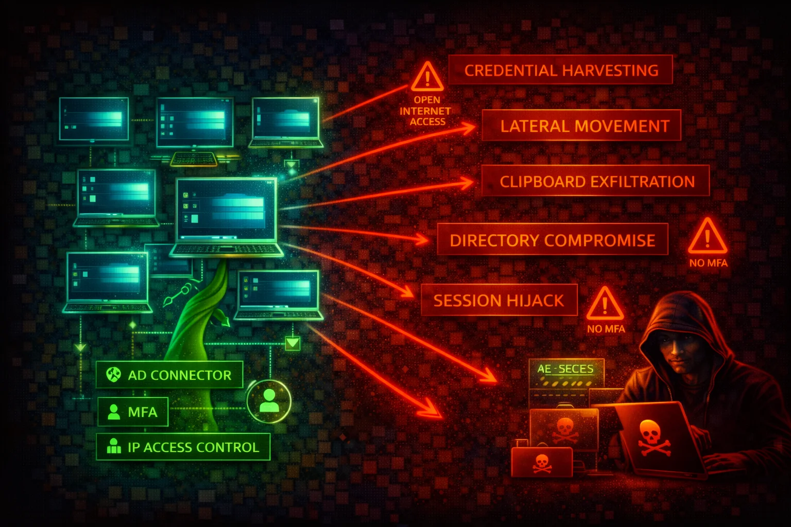

Amazon WorkSpaces is a managed Desktop-as-a-Service (DaaS) provisioning cloud-based Windows or Linux virtual desktops. A compromised WorkSpace gives an attacker a foothold inside the customer VPC with AD-joined credentials, network access to internal resources, and clipboard/drive exfiltration paths.
Each WorkSpace is associated with a directory (AWS Managed Microsoft AD, AD Connector, or Simple AD) and runs inside a customer VPC. Supports clipboard redirection, drive redirection, USB redirection, and local printing.
The directory backing WorkSpaces is the single authentication plane. Clients connect via native apps or web browser. Without IP access control groups and MFA, WorkSpaces can be accessed from any IP with valid AD credentials.
WorkSpaces provide full desktop environments inside the VPC with AD credentials. Clipboard and drive redirection create data exfiltration channels. Without IP access control groups and MFA, WorkSpaces can be accessed from any IP. WorkSpaces run on managed compute not visible in EC2 console.
aws workspaces describe-workspacesaws workspaces describe-workspace-directoriesaws workspaces describe-workspaces-connection-statusaws workspaces describe-ip-groupsaws workspaces describe-workspaces-poolsaws workspaces create-workspaces \
--workspaces DirectoryId=d-1234567890,UserName=attacker,BundleId=wsb-XXXXXaws workspaces modify-workspace-access-properties \
--resource-id d-1234567890 \
--workspace-access-properties DeviceTypeWeb=ALLOWaws workspaces rebuild-workspaces \
--rebuild-workspace-requests WorkspaceId=ws-abc123defaws workspaces modify-workspace-properties \
--workspace-id ws-abc123def \
--workspace-properties RunningMode=ALWAYS_ON{
"Effect": "Allow",
"Action": "workspaces:*",
"Resource": "*"
}Full control including creating rogue WorkSpaces, disabling security controls, and terminating legitimate ones
{
"Effect": "Allow",
"Action": [
"workspaces:DescribeWorkspaces",
"workspaces:DescribeWorkspaceDirectories",
"workspaces:DescribeIpGroups"
],
"Resource": "*"
}Read-only access for monitoring and auditing. Cannot create, modify, or terminate WorkSpaces.
Restrict WorkSpace access to known corporate IP ranges or VPN egress IPs.
aws workspaces create-ip-group \
--group-name "CorporateVPN" \
--user-rules "ipRule=203.0.113.0/24,ruleDesc=Corp VPN"Configure RADIUS-based multi-factor authentication on the directory for all WorkSpace logins.
Use Group Policy (Windows) or DCV config (Linux) to disable or restrict clipboard and drive redirection.
Disable unnecessary device types (especially Web Access).
aws workspaces modify-workspace-access-properties \
--resource-id d-1234567890 \
--workspace-access-properties DeviceTypeWeb=DENY,DeviceTypeIos=DENYEncrypt both root and user volumes with KMS at creation time (cannot be enabled later).
Reduce attack window during idle periods.
aws workspaces modify-workspace-properties \
--workspace-id ws-abc123 \
--workspace-properties RunningMode=AUTO_STOP,RunningModeAutoStopTimeoutInMinutes=60